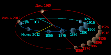
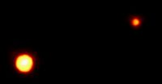
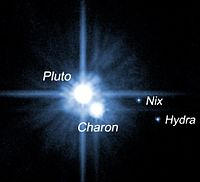
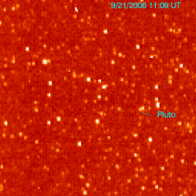

Плутон
 Плутон е втората по големина планета джудже, обикаляща около Слънцето за приблизително
248 години, така че от откриването ѝ досега тя не е изминала дори половината от пътя по
орбитата си. Плутон е замръзнал безжизнен свят в покрайнините на Слънчевата система. До
24 август 2006 г. Плутон се смята за деветата планета от Слънчевата система. Поради
малките си размери, наклона на орбитата спрямо слънчевия екватор и ексцентричната си
орбита, заради която понякога се намира по-близо до Слънцето от Нептун, винаги е имало
спорове дали Плутон трябва да се разглежда като планета. Небесното тяло носи името на
римския бог на подземното царство.
Символът на планетата е комбинация от първите букви
(на латиница) от името на американския астроном Пърсивал Ловел. В средата на XX век е
установено, че блясъкът на Плутон се променя с период 6,4 дни. Първоначално се смята,
че това е период на околоосно въртене на планетата. През 1978 г. американският астроном
Кристи обръща внимание, че фотографският образ на планетата е удължен и голямата ос на
образа се върти със същия период. След време се изяснява, че това удължаване на образа
се дължи на спътник, разположен много близо до планетата. Спътникът е наречен Харон
(по името на лодкаря от гръцката митология, превозващ душите на умрелите през реката
Стикс в царството на мъртвите). Той се намира на разстояние около 20 000 км от планетата
и има диаметър около 1200 км, т.е. сравнително близък до този на Плутон. Следователно
Плутон и Харон всъщност са двойна планета и обикалят около общ гравитационен център.
Плутон е втората по големина планета джудже, обикаляща около Слънцето за приблизително
248 години, така че от откриването ѝ досега тя не е изминала дори половината от пътя по
орбитата си. Плутон е замръзнал безжизнен свят в покрайнините на Слънчевата система. До
24 август 2006 г. Плутон се смята за деветата планета от Слънчевата система. Поради
малките си размери, наклона на орбитата спрямо слънчевия екватор и ексцентричната си
орбита, заради която понякога се намира по-близо до Слънцето от Нептун, винаги е имало
спорове дали Плутон трябва да се разглежда като планета. Небесното тяло носи името на
римския бог на подземното царство.
Символът на планетата е комбинация от първите букви
(на латиница) от името на американския астроном Пърсивал Ловел. В средата на XX век е
установено, че блясъкът на Плутон се променя с период 6,4 дни. Първоначално се смята,
че това е период на околоосно въртене на планетата. През 1978 г. американският астроном
Кристи обръща внимание, че фотографският образ на планетата е удължен и голямата ос на
образа се върти със същия период. След време се изяснява, че това удължаване на образа
се дължи на спътник, разположен много близо до планетата. Спътникът е наречен Харон
(по името на лодкаря от гръцката митология, превозващ душите на умрелите през реката
Стикс в царството на мъртвите). Той се намира на разстояние около 20 000 км от планетата
и има диаметър около 1200 км, т.е. сравнително близък до този на Плутон. Следователно
Плутон и Харон всъщност са двойна планета и обикалят около общ гравитационен център.
Откриване
Плутон е открит от астронома Клайд Томбо в обсерваторията Ловел, Аризона, САЩ на 18 февруари 1930 г., когато той сравнява две фотографски плаки, направени съответно на 23 и 29 януари. Планетата впоследствие е намерена на фотографии, най-старите от които са били заснети на 19 март 1915 г. Томбо открива Плутон, докато търси неизвестната планета X, причиняваща отклонения в орбитата на Нептун. В действителност обаче тези „отклонения“ са били причинени от недостатъчната точност, с която масата на Нептун е била известна тогава. Макар и формално да носи името на римския бог Плутон, името на планетата е избрано така, че да съдържа инициалите на астронома Пърсивал Ловел, който предсказва съществуването на планета отвъд орбитата на Нептун. Името „Плутон“ е предложено от Виниша Бърни – единадесетгодишно момиче от Оксфорд, Англия.
Физически характеристики
Орбита
 Плутон се завърта около Слънцето за 248 години. За разлика от орбитите на осемте планети от Слънчевата система, които почти съвпадат с т.нар. равнина на еклиптиката, тази на Плутон е наклонена под ъгъл от 17 градуса спрямо нея. Освен това тя е и силно елиптична, в резултат на което в определен период от въртенето си около Слънцето Плутон се намира по-близо до него отколкото Нептун, например гравитационният център на системата Плутон – Харон се намира в перихелий на 5 септември 1989 г., като е по-близо до Слънцето от Нептун в периода 7 февруари 1979 – 11 февруари 1999 г. Плутон се завърта около оста си за 6.39 земни дни.
Маса и размери
Масата на Плутон е около 1.31×1022 кг, около 0,24 % от земната. Диаметърът му е 2370 км по последни данни от „Нови хоризонти“. Площта му е около 1.665×107 кв.км, приблизително колкото тази на Русия. Гравитацията на Плутон е 0.063g. От тези данни следва, че Плутон е не само по-малък и по-лек от всички планети в Слънчевата система; той е по-малък и по-лек от седем спътници на други планети: Ганимед, Титан, Калисто, Йо, Луната, Европа и Тритон. Плутон обаче е по-голям от малките планети в астероидния пояс и от всички известни обекти в пояса на Кайпер. Виж списък на обектите в Слънчевата система по радиус и списък на обектите в Слънчевата система по маса. Масата и диаметърът на Плутон остават неизвестни дълго време след неговото откриване, чак до откриването на спътника му Харон през 1978 г. Така масата на системата Плутон–Харон е определена чрез прилагане на законите на Кеплер. Диаметърът на планетата е установен след изобретяването на телескопите с адаптивна оптика, които позволяват за пръв път да се наблюдава диска ѝ.
Повърхност
Повърхността на Плутон е покрита от около 98 % азотен лед с примеси метан и въглероден оксид. Частта, обърната към спътника Харон, е с по-висока концентрация на метан. Известни географски образувания са регионът Томбо (с форма на сърце), регионът Хтулу, ледените планини Хилъри и Норгай.
Атмосфера
Плутон има тънка атмосфера, състояща се от азот, метан и въглероден оксид. Атмосферното налягане варира от 0,6 до 2,4 Pa (паскала).
Спътници
Харон
 Плутон има пет известни естествени спътника – Харон, Никта, Хидра, Цербер и Стикс. Харон е естествен спътник, открит през 1978 г. Харон и Плутон са двойна планета джудже. Никта и Хидра са открити през 2005 г. Четвъртата и петата луна на Плутон са открити през 2011 и 2012 г. от телескопа „Хъбъл“. Имената са избрани след проведено допитване до астрономите, които откриват спътниците на планетата. Диаметърът на Цербер е между 13 и 34 км, а на Стикс – между 10 и 25 км. Барицентърът на Плутон с Харон лежи над повърхността на Плутон в посока към неговия спътник. Плутон и Харон се въртят синхронно един спрямо друг: винаги са обърнати един към друг с една и съща страна. Откриването на Харон позволява да се определи общата маса на Плутон и Харон, като се използва орбиталният им период и законите на Кеплер. Преди да бъде наблюдаван отделно от Харон, за Плутон се смята, че има големина между тази на Меркурий и Марс. След появата на телескопи с адаптивна оптика големината му е наблюдавана директно. Поради по-малък от очаквания диаметър, албедото на Плутон се оказва по-голямо от предишните изчисления, като отстъпва само на албедото на Венера. Възможно е Плутон и Харон първоначално да са били спътници на Нептун, но по-късно да са били „изхвърлени“ на собствена орбита. Сегашните данни обаче показват, че Плутон никога не е бил Нептунов спътник. Ретроградната орбита на Тритон показва, че този Нептунов спътник вероятно е бил заловен от гравитационното поле на Нептун, а преди това е имал собствена орбита около Слънцето, подобна на тази на Плутон. Тритон и Плутон имат много общи атмосферни и геоложки черти, сочещи близък произход.
Външни спътници
 Два нови спътника са открити от астрономи на снимки, заснети от телескопа Хъбъл на 15 май 2005 г. – Хидра и Никта. Наблюденията показват, че те се намират на около два пъти по-голямо разстояние от Плутон спрямо Харон (Никта на около 50 000, Хидра на около 65 000 км). Най-вероятно и двата спътника се движат в орбиталната равнина на Харон и се намират в орбитален резонанс съответно 4:1 и 6:1. Смята се, че по размер тези обекти са около 50 – 150 км в диаметър, много по-малки от Харон (1200 км) и много по-леки (0,3% от масата на Харон). На 20 юли 2011 г. е обявено откриването на четвърти спътник на Плутон след нови серии снимки, направени от космическия телескоп „Хъбъл“. Диаметърът на четвъртия спътник е между 13 и 34 км. Носи названието Цербер и обикаля около Плутон по орбита, разположена между орбитите на Хидра и Никта. На 11 юли 2012 г., поради наближаващия момент на преминаване на космическия апарат „Нови хоризонти“ покрай системата Плутон–Харон, е направена нова серия снимки от „Хъбъл“. На тях е открит още един спътник, най-малкият от всички пет, с диаметър около 10 – 25 км. Носи названието Стикс.
Изследване
 Плутон е посетен от космически апарат на 14 юли 2015 г., според плановете на НАСА за мисията „Нови хоризонти“. Тази мисия включва камери, инструменти за радионаблюдение и спектрография с цел характеризиране на цялостната геология, повърхностен състав и атмосфера на Плутон, Харон и двата новооткрити спътника. В допълнение се планира посещението на обекти в пояса на Кайпер през 2022 г.
Спорове относно Плутон
Планета Х?
Плутон е открит през 1930 г. като резултат от търсене на тяло с маса, достатъчна да обясни отклоненията (за каквито са се смятали тогава) на орбитата на Уран и Нептун. След като планетата е открита, нейната изключителна бледост и липсата на видим диск пораждат скептицизъм относно това дали тя е неизвестната планета, търсена от Пърсивал Ловел. Ловел прави предположение за местоположението на планетата X през 1915 г. което се оказва недалече от положението на Плутон, но според Ърнест Е. Браун и повечето съвременни астрономи, това е било чисто съвпадение. Като доказателство за тази гледна точка, през 1902 г. Ловел прави коренно различно предположение за Планетата X. В последвалите десетилетия подобряването на телескопите позволява определянето на масата на планетата с по-голяма точност. В продължение на много години масата на Плутон е ревизирана главно надолу, предизвиквайки шеговити и донякъде иронични коментари, че ако това продължава, то планетата съвсем ще изчезне. Тези предсказания в известна степен се сбъдват, когато през 2006 г. Плутон е декласиран до планета джудже. За да бъде обяснен малкият видим диаметър на Плутон спрямо очаквания голям видим диаметър на планетата X, е предложена теорията за точковото отражение, според която светлината на Слънцето се отразява в посока към Земята само от малка част от общата повърхност на планетата поради голямата ѝ гладкост. Тази теория е оборена с откриването на Харон през 1978 г. и последвалото пряко измерване на масата на планетата, която се оказва по-малка и от най-песимистичните очаквания. Анализ на траекторията на „Вояждър 2“ показва, че масата на Нептун е по-малка, отколкото се е смятало, и по този начин е напълно обяснена орбитата му, без да е необходима планета X. По този начин предсказанието на Лоуел от 1915 г. за нова планета е чисто съвпадение. Плутон е открит благодарение на усилията на Томбо, който впоследствие продължава да търси други планети, докато най-накрая се убеждава, че няма други тела с необходимата яркост зад орбитата на Плутон.
Малка планета
Септември 1992 г. бележи началото на поредица от открития на сравнително малки по размери ледени тела на орбита отвъд тази на Нептун в област, сега известна под името пояс на Кайпер. След откриването на голям брой обекти с размери, сравними с тези на Плутон, в научните среди започва дискусия дали е правилно Плутон да се нарича „планета“ или „обект от пояса на Кайпер“. Световната преса, в качеството си на представител на общественото мнение, общо взето се обявява срещу декласирането на Плутон. Вестници и интернет страници като BBC News Online, Boston Globe, USA Today, както и ученици, изпратили писма до Международния астрономически съюз, подкрепят оставянето на Плутон в групата на планетите. На 3 февруари 1999 г. Брайън Марсдън от Центъра за малки планети отново разпалва въпроса, предлагайки на Плутон да бъден дадено „двойно гражданство“: като деветата основна планета и малка планета номер 10000. Впоследствие Международният астрономически съюз разкрива, че не планира промяна в класификацията на Плутон и номер 10000 е даден на обикновен астероид. Според някои интерпретации терминът планета (значещ на гръцки „странник“/„пътешественик“) сам по себе си не е обвързан с тяло, имащо определен произход, орбита или големина. По този начин не само Плутон, но и големи спътници като Титан, Европа и Тритон, дори някои от големите астероиди трябва да бъдат наричани планети. Според някои учени всеки обект, достатъчно масивен, за да може под действието на собствената си гравитация да придобие сферична форма (около 360 км в диаметър), може да бъде наричан планета.
Нови открития
През 2002 г. е открит обект от пояса на Кайпер – 50000 Кваоар с диаметър от 1280 km (~½ от този на Плутон). Впоследствие е открит обектът 90482 Оркус с приблизително същите размери, а на 15 март 2004 г. е открит и 90377 Седна с горна граница на диаметъра от 1800 км. Ако диаметърът бъде потвърден, това ще е най-големият обект, открит в Слънчевата система след Плутон през 1930 г. Някои астрономи смятат, че е само въпрос на време, преди да бъде открит обект, по-голям от Плутон, дори такъв със собствени спътници. Изглежда обаче, че за в бъдеще Плутон ще бъде смятан за планета по исторически, а не фактологически причини (както Европа се смята за отделен континент от Азия, въпреки че в геоложки смисъл континентът е един – Евразия).